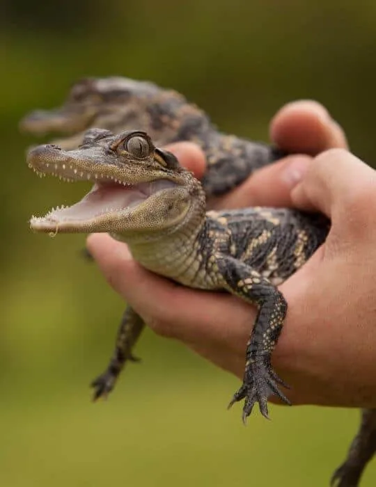
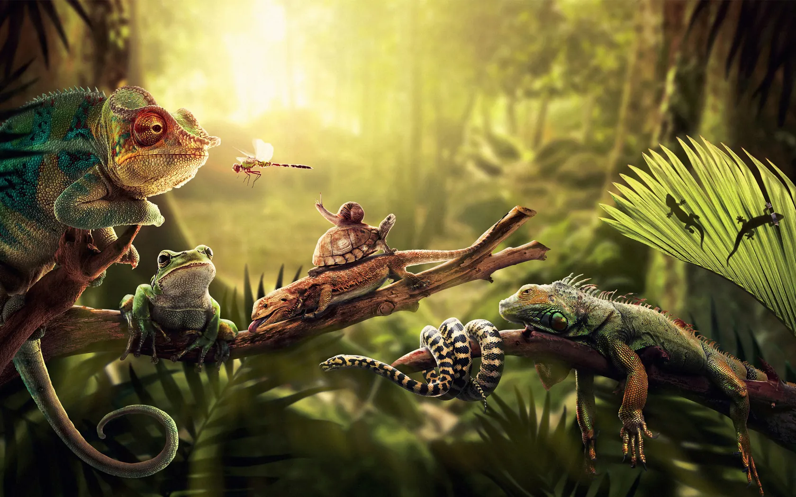
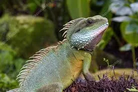
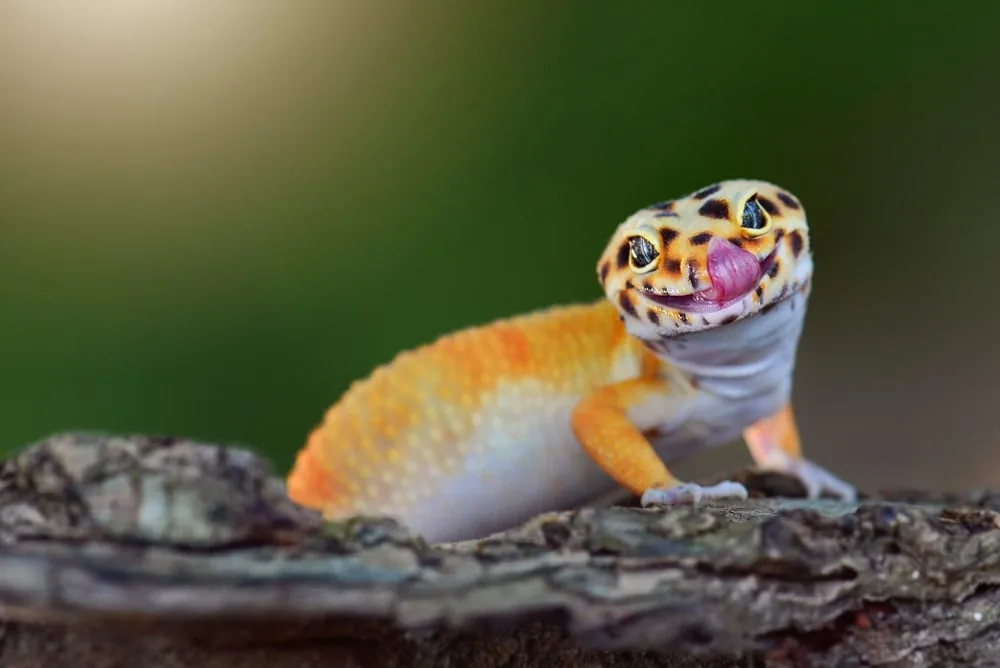
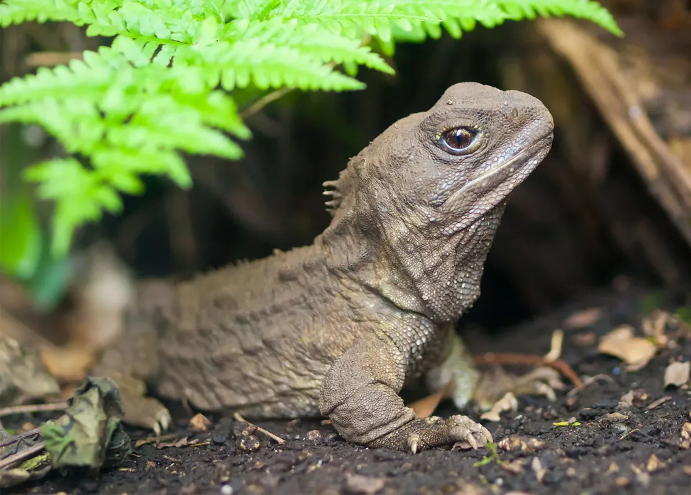
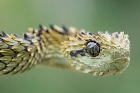
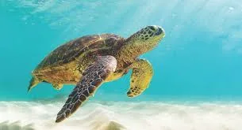
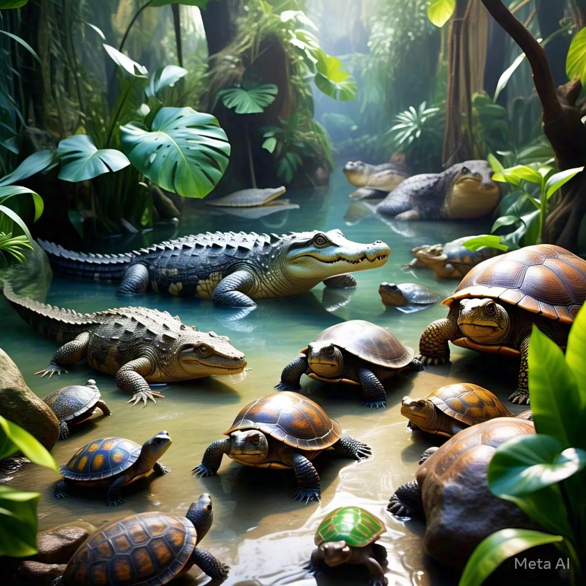

Reptiles
Crocodile
Crocodylidae
Crocodiles are powerful reptiles that have changed very little since the age of the dinosaurs.

Reptiles are covered in dry scales and rely on the sun to warm their bodies. Most lay eggs on land. Their family includes snakes, lizards, turtles, crocodiles and the rare tuatara.
Select “Learn more” on any card for habitat, diet and a fun fact.

Reptiles
Crocodylidae
Crocodiles are powerful reptiles that have changed very little since the age of the dinosaurs.

Reptiles
Iguanidae
A large lizard with a row of spines along its back. Many iguanas spend their days basking in the sun.

Reptiles
Eublepharis macularius
A small, spotted lizard that hunts at night. It stores fat in its tail.

Reptiles
Sphenodon punctatus
A rare reptile found only in New Zealand. It looks like a lizard but belongs to its own ancient group.

Reptiles
Serpentes
Snakes are limbless reptiles with no eyelids or ears. They smell the air with their tongues.

Reptiles
Cheloniidae
A reptile that spends its life at sea. Females return to land only to lay eggs on sandy beaches.
Reptiles cannot make their own body heat, so they bask in the sun to warm up and hide in the shade to cool down.
